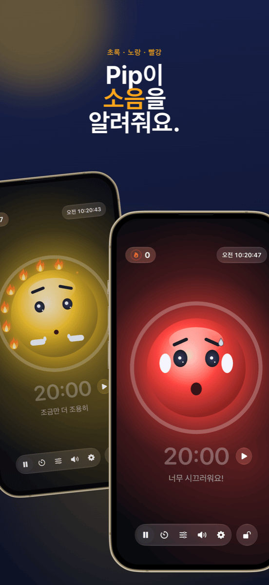

학급 경영: 자리 배치, 모둠, 소음을 한 번에 관리하기
좋은 학급 경영은 거의 눈에 띄지 않습니다. 그리고 그것이 바로 목표입니다. 수업은 매끄럽게 흘러가고, 활동 전환도 잘 이루어지며, 시간은 잔소리가 아니라 배움에 쓰입니다. 거의 모든 수업에서 세 가지 질문이 반복됩니다. 누가 어디에 앉을까? 누가 누구와 함께 활동할까? 그리고 지금은 어느 정도까지 시끄러워도 될까? 이 가이드는 이 세 가지가 문제가 되기 전에 모두 해결하는 진행 방법을 소개합니다.
학급 경영이란 정말 무엇일까
학급 경영은 규율 이상의 것입니다. 미국의 심리학자 제이콥 쿠닌은 이미 1970년대에, 유능한 교사는 문제 행동에 어떻게 대응하느냐보다 문제를 얼마나 잘 예방하느냐에서 차이가 난다는 것을 보여 주었습니다. 그가 제시한 특징은 다음과 같습니다.
- 전체를 보는 눈: 학생들은 선생님이 교실 전체를 보고 있다고 느낍니다.
- 매끄러움과 흐름: 활동 사이의 전환에 시간이 낭비되지 않고, 수업의 리듬이 끊기지 않습니다.
- 집단 참여 유도: 발표하는 학생만이 아니라 모두가 계속 참여합니다.
이 중 많은 부분은 태도와 경험에서 나옵니다. 하지만 일부는 그저 준비와 조직의 문제이고, 그것은 미리 준비할 수 있습니다. 아래의 진행 방법이 바로 그 부분을 돕습니다.
1단계 · 처음에 한 번만명단은 한 번 만들고 어디서나 쓰기
가장 큰 시간 낭비는 같은 일을 두 번 하는 것입니다. Excel, Numbers, Google 스프레드시트에서 학급 명단을 한 번만 CSV로 내보내세요. Platzwahl와 팀 뽑기 모두 이 파일을 바로 가져올 수 있어서, 반 전체가 몇 초 만에 등록됩니다. 두 앱 모두 이름을 기기 안에만 저장하며, 계정도 클라우드도 쓰지 않습니다. 학생 정보를 다룰 때 이것은 사소한 부분이 아니라 전제 조건입니다.
2단계 · 기초자리 배치표: 문제가 생기기 전에 막기
자리 배치는 학급 경영에서 가장 효과적인 도구입니다. 선생님이 아무 말을 하지 않아도 매 순간 작동하기 때문입니다. 누가 누구 옆에 앉느냐가 잡담, 산만함, 집중을 좌우합니다. 효과가 검증된 방법:
- 산만한 학생들은 떨어뜨리기: 옆자리뿐 아니라 앞뒤로도 붙여 앉히지 않습니다.
- 가까움 활용하기: 도움이 필요하거나 쉽게 딴생각에 빠지는 학생은 선생님의 시선이 바로 닿는 자리에 앉힙니다.
- 차분한 학생을 ‘닻’처럼 배치하기: 활발한 학생들 사이에 둡니다.
- 정기적으로 자리 바꾸기: 방학 후나 매달처럼 주기적으로 바꿔서 늘 시끄러운 구역이 생기지 않게 합니다.
Platzwahl에서는 이런 규칙을 학생마다 설정하고(방해 성향, 앞자리, 원하는 짝, 떨어뜨릴 조합) 자리 배치표를 자동으로 계산합니다. 점수로 모든 규칙이 얼마나 잘 지켜졌는지 확인할 수 있습니다. 완성된 배치표는 PDF로 교탁에 올려 두면 됩니다.
 3단계 · 협력 활동
3단계 · 협력 활동
다툼 없는 공정한 모둠
“저희끼리 정하면 안 돼요?”라는 질문 하나로 많은 모둠 활동이 시작도 전에 흔들립니다. 자유롭게 고르게 하면 시간이 걸리고, 친한 무리끼리 굳어지며, 늘 같은 학생이 남습니다. 선생님이 의도적으로 나누면 공정하지만 손이 많이 가고, 10분짜리 짝 활동에는 거의 맞지 않습니다.
짧은 활동이 많을 때는 무작위가 가장 좋습니다. 빠르고, 누구도 편애받는다고 느끼지 않으며, 학생들은 누구와도 함께 활동하는 법을 배웁니다. 중요한 것은 추첨이 눈에 보여야 한다는 점입니다. 프로젝터에서 이름이 섞이는 모습을 모두가 보면, 따질 일이 없습니다.
팀 뽑기에서는 팀 수를 고르고, 결석한 학생을 한 번의 탭으로 빼고, 추첨하면 됩니다. 팀은 프로젝터로 크게 띄우거나 PDF로 내보낼 수 있습니다. 특정 조합을 피해야 하는 긴 프로젝트라면 여전히 의도적으로 나누는 편이 낫습니다.
 4단계 · 활동 시간
4단계 · 활동 시간
계속 “조용!” 하는 대신 소음을 눈에 보이게
모둠 활동은 시끄럽기 마련이고, 그건 괜찮습니다. 문제는 어느 정도가 너무 시끄러운지 아무도 모르게 되어, 선생님이 수업 내내 “쉿!”만 외치게 될 때입니다. 잔소리는 금방 효과가 떨어지고, 오히려 집중하고 있는 학생들을 방해합니다.
더 잘 통하는 방법은 세 가지입니다.
- 목소리 크기 약속하기: 어떤 활동에서 무엇이 괜찮은지 학생들과 함께 정합니다. 개별 활동은 속삭이는 목소리, 모둠 활동은 짝에게만 들리는 목소리.
- 목소리 크기 보여 주기: 프로젝터에 띄운 소음 신호등이, 원래 선생님이 말로 해야 했을 피드백을 대신 전해 줍니다.
- 소음을 벌하기보다 조용함을 칭찬하기: 신호등이 빨간색이 되어 무언가를 빼앗기만 하면 금세 압박의 도구가 되고, 목소리 큰 몇몇 학생이 반의 희생양이 됩니다. 반 전체가 이룰 수 있는 공동 목표가 더 효과적입니다.
Ruhe는 바로 이것을 위해 만들어졌습니다. 마스코트가 초록, 노랑, 빨강으로 보여 주고, 조용한 동안 불꽃이 하나씩 켜집니다. 불꽃 12개가 모이면 화관이 완성되고, 함께 축하합니다. 노랑과 빨강의 기준은 활동에 맞게 설정하거나 Ruhe가 스스로 맞추도록 할 수 있습니다. 타이머가 남은 시간을 보여 주고, 프로젝터 화면으로 모든 것을 벽에 크게 띄우며, 조작은 선생님의 iPad에서 합니다. Ruhe는 소리의 크기만 측정하며, 아무것도 녹음하지 않습니다.

5단계 · 마무리잘한 점을 눈에 보이게
수업이 끝날 때 중요한 것은 무엇이 잘되었는가입니다. 불꽃 화관이 완성되었다면 반 전체를 짧게 칭찬할 좋은 기회입니다. 오늘 잘되지 않았다면, 누구 탓인지 찾지 않고 왜 그랬는지 함께 생각해 볼 기회입니다. 특정 자리에서 같은 문제가 반복된다면 다음 자리 바꾸기가 필요하다는 신호입니다.
이 방법으로 진행하는 수업의 모습
| 단계 | 하는 일 | 도구 |
|---|---|---|
| 수업 전 | 자리 배치표가 나와 있어 모두 자기 자리를 압니다. 자리 다툼이 없습니다. | Platzwahl |
| 도입 | 정해진 자리에서 전체 수업. | – |
| 전환 | 프로젝터에서 팀을 추첨하고, 결석한 학생은 이미 빠져 있습니다. | 팀 뽑기 |
| 활동 시간 | 소음 신호등과 타이머가 프로젝터에 떠 있고, 반 전체가 불꽃을 모읍니다. | Ruhe |
| 정리 | 정해진 자리로 돌아와 불꽃 화관을 잠깐 확인합니다. | Ruhe |
자주 묻는 질문
학급 경영이란 무엇인가요?
학급 경영은 수업 시간의 최대한 많은 부분이 실제 배움의 시간이 되도록 교사가 하는 모든 일을 말합니다. 규칙과 일과, 교실과 자리 배치, 매끄러운 활동 전환, 그리고 반 전체를 살피는 일이 포함됩니다. 문제 행동에 대응하는 것보다 애초에 문제가 생기지 않게 하는 것이 핵심입니다.
반이 늘 너무 시끄러울 때는 어떻게 하면 좋을까요?
먼저 어떤 활동에서 어느 정도의 목소리가 허용되는지 학생들과 함께 정하세요. 그다음 잔소리를 반복하는 대신 목소리 크기를 눈에 보이게 하세요. 예를 들어 프로젝터에 소음 신호등을 띄우는 방법이 있습니다. 가장 효과적인 것은 소음을 벌하기만 하는 것이 아니라 조용했던 시간을 인정해 주는 것입니다.
수업에서 소음 신호등을 쓰는 것이 의미가 있을까요?
네, 벌을 주는 도구가 아니라 공동의 목표로 쓴다면 그렇습니다. 기준은 활동에 맞아야 합니다. 모둠 활동은 개별 활동보다 시끄러워도 됩니다. 소음을 벌하는 대신 조용함을 칭찬하는 신호등은 목소리 큰 몇몇 학생이 반의 희생양이 되는 것을 막아 줍니다.
모둠은 무작위로 나눠야 할까요, 의도적으로 나눠야 할까요?
둘 다 쓰임이 있습니다. 짧고 자주 하는 짝 활동이나 모둠 활동에는 무작위가 가장 좋습니다. 빠르고 공정하며 누구와 할지로 다투지 않습니다. 긴 프로젝트나 신경 써야 할 조합이 있을 때는 의도적으로 나누는 수고를 들일 만합니다. 반면 자리 배치표 자체는 언제나 의도를 갖고 계획해야 합니다.